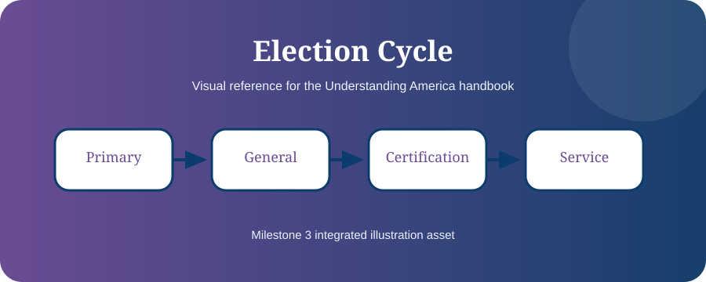

Chapter 18
A Day in the Life of an American Citizen
Ordinary daily activities often involve multiple levels of government.
Understanding is stronger than memorization. This chapter connects facts to meaning and real civic life.
Learning Objectives
- Recognize government services in daily life
- Identify agencies behind everyday systems
- Understand rights in daily situations

Morning Systems
Electricity, water, food safety, roads, and traffic signals are supported by a mixture of local, state, federal, and private systems.
Work and School
Workplace rules, taxes, schools, health regulations, and internet infrastructure all involve government in some way.
Travel and Services
Mail, passports, TSA screening, highways, parks, and public safety show how government works quietly in daily life.
Rights Throughout the Day
The Constitution protects speech, religion, privacy, due process, and fair treatment whether or not you actively think about those rights.
Remember ThisGovernment is woven into daily life.
Milestone 3 Visual Pack: This chapter is now tagged for publication artwork, editorial review, glossary linking, and future citation verification. The final edition should replace any remaining placeholder diagram with a chapter-specific SVG, map, or timeline.

Chapter Summary
- Government is woven into daily life.
- Different services belong to different levels.
- Rights protect people every day.
Key Terms
Constitution · Government · Rights · Citizenship · Federalism · Representation · Rule of Law
Review Questions
- What is the main idea of this chapter?
- How does this chapter connect to the Constitution?
- Why is this topic important for citizenship?
- Give one real-life example from this chapter.